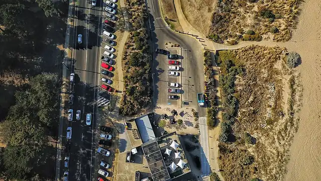

Fishermans Beach, Torquay
Fishermans Beach is a beach in Torquay, in the Surf Coast Shire Council area, good for all ages. Beach Rd/Fischer St (bus) is a 6-minute walk away and the nearest public toilet is about 136 m away.


Quick facts
- Toilets
- 136 m away, accessible
- Public transport
- Beach Rd/Fischer St, bus (routes 53, 54), 6 min walk
This page has basic info from the map: name, location and type. We have not checked the details yet. Know this place? Tell us.
Questions parents ask
- Where is Fishermans Beach?
- Fishermans Beach is in Torquay, Victoria.
- Is Fishermans Beach free?
- Yes. It is a public beach, free to visit.
- Are there toilets at Fishermans Beach?
- The nearest public toilet is about 136 m away.
- How do I get to Fishermans Beach by public transport?
- The closest stop is Beach Rd/Fischer St (routes 53, 54), a 6-minute walk.
Nearby places
- Taylor Park
Park · TorquayFreeBus 4 min walk
- Elephant Walk Park
Playground · TorquayToilet nearbyFreeBus 8 min walk
- Solhouse Cafe
Cafe or restaurant · TorquayToilet nearbyBus 5 min walk
- Lentil's Indian Cuisine
Cafe or restaurant · TorquayToilet nearbyBus 3 min walk
- Playground at Deep Creek Nature Reserve
Playground · TorquayFreeBus 4 min walk
- Front Beach
Beach · TorquayToilet nearbyFreeBus 5 min walk
- Torquay Library
Library · TorquayToilet nearbyFreeBus 2 min walk
- Torquay Skate Park
Skate, BMX or pump track · TorquayToilet nearbyFreeBus 1 min walk